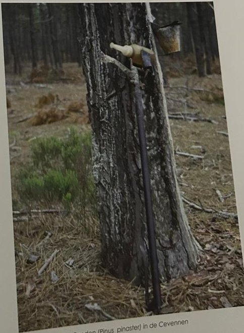

Groepen › Oude Wereld
28. Zuid-Frankrijk en Zuid-Italië, Gebergtebossen

Bij mediterrane streken denken we onmiddellijk aan maquis en garrigue-vegetaties, maar die zijn natuurlijk in onze noordelijke leemstreek niet te reproduceren, al houdt een uitgezochte altijdgroene Steeneik of Kermeseik het misschien wel een tijdje uit. In het westelijke Middellandse-zeegebied komen op grotere hoogte bossen voor van Zwarte den en dat vonden onze bosbouwers wel een interessante soort. Hij groeit ook bij ons sneller en rechter dan onze eigenste Grove den en doet het ook niet slecht op zandige, droge grond. Over de precieze taxonomische indeling van ondersoorten van de ‘Pinus nigra’ bestaat nog discussie, maar er is vaak onderscheid gemaakt tussen diverse subsoorten : de ‘salzmanni’ uit de Cevennen en de Pyreneeën, de ‘laricio’ uit Corsica, de ‘calabrica’ uit Zuid-Italië, de ‘nigra’ uit Oostenrijk, de ‘dalmatica’ van Istrië en de ‘palassiana’ van Griekenland en de Krim. Naar de eerste drie herkomsten, Cevennen, Corsica en Calabrië, is de arboretumgroep 28 ingedeeld in subgroepen en de zaden waaruit de dennen zijn opgekweekt komen ook daar vandaan. Overeenkomstig het herkomstgebied staan de Zwarte dennen er vergezeld van Zuid-Europese soorten als Zeeden, Tamme kastanje, Donzige eik, Pluimes, Italiaanse esdoorn of Hartbladige els.
Uit het boek
2,43 ha · 27 soorten · 1308 bomen
- Drie losse percelen met drie herkomsten van de zwarte den: Corsica (28A), de Cevennen (28B) en Calabrië (28C).
- Corsica: wandel vanaf de Kwekerijdreef zuidwaarts en zoek de cirkels van Italiaanse elzen tussen de dennen. Calabrië: wandel vanaf de Kapucijnendreef noordwaarts door drie hoogte-etages.

Bron: Geografisch Arboretum Tervuren. Een wereldreis rond bomen (2020), p. 214 en volgende.
Deelgroepen
- 28A – Corsica
- 28B – Basses-Cévennes
- 28C – Straat van Messina
Soorten in deze groep (28)
- Pinus nigraZwarte den · 209 bomen
- Alnus cordataHartbladige els · 139 bomen
- Fagus sylvaticaGewone beuk · 129 bomen
- Abies albaGewone zilverspar · 110 bomen
- Fraxinus ornusGewone pluim-es · 97 bomen
- Castanea sativaTamme kastanje · 93 bomen
- Pinus nigra subsp. salzmanniiPyrenese den · 83 bomen
- Acer opalusItaliaanse esdoorn · 55 bomen
- Quercus petraeaWintereik · 50 bomen
- Quercus cerrisMoseik · 34 bomen
- Fraxinus angustifoliaSmalbladige es · 23 bomen
- Cercis siliquastrumJudasboom · 18 bomen
- Acer monspessulanumMontpellieresdoorn · 13 bomen
- Arbutus unedoEuropese aardbeiboom · 13 bomen
- Euonymus europaeusWilde kardinaalsmuts · 10 bomen
- Pinus pinasterZeeden · 8 bomen
- Juniperus communisGewone jeneverbes · 7 bomen
- Pinus sylvestrisGrove den · 7 bomen
- Populus x canescensGrauwe abeel · 5 bomen
- Quercus ilexSteeneik · 4 bomen
- Carpinus orientalisOosterse haagbeuk · 3 bomen
- Cornus species3 bomen
- Quercus canariensisAlgerijnse eik · 2 bomen
- Quercus pubescensDonzige eik · 2 bomen
- Quercus roburZomereik · 2 bomen
- Crataegus monogynaEénstijlige meidoorn · 1 boom
- Ilex aquifoliumEuropese hulst · 1 boom
- Ulmus glabraRuwe iep · 1 boom
Tekst en foto: arboretum-tervuren.be (Koninklijke Schenking), met toestemming gebruikt.